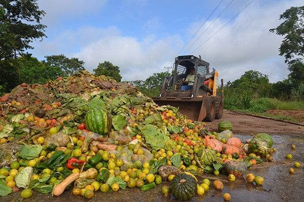
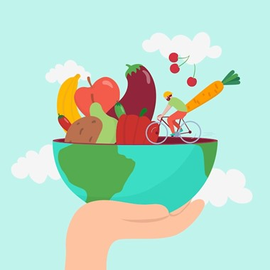

FreshRoutes
Desenvolvimento de uma plataforma digital para conectar diretamente agricultores e consumidores.
O problema na agricultura e distribuição de alimentos
A agricultura é uma das indústrias mais vitais do mundo, no entanto, enfrenta desafios significativos. Problemas incluem ineficiências na cadeia de suprimentos, presença de múltiplos intermediários, dificuldades dos agricultores em obter preços justos e a falta de transparência na origem dos alimentos para os consumidores. A pandemia de COVID-19 também destacou a necessidade de sistemas mais resilientes e sustentáveis.
Descrição da Ideia
"FreshRoutes" é um projeto que busca desenvolver uma plataforma digital destinada a estabelecer um elo direto entre produtores agrícolas e consumidores. Através desta plataforma, agricultores podem listar e vender seus produtos diretamente, enquanto os consumidores podem comprar alimentos frescos e de alta qualidade, com pleno conhecimento de sua proveniência. Além disso, a plataforma busca oferecer ferramentas de gestão de negócios para agricultores e opções de entrega flexíveis para consumidores.
Benefícios do FreshRoutes
O projeto "FreshRoutes" pode trazer benefícios significativos para agricultores, consumidores e para a sociedade como um todo. Para os agricultores, a plataforma pode proporcionar um canal de vendas direto que pode ajudá-los a receber preços mais justos por seus produtos. Para os consumidores, a plataforma pode fornecer acesso a alimentos frescos e de alta qualidade, além de transparência sobre a origem dos alimentos. A sociedade como um todo pode se beneficiar de uma cadeia de suprimentos de alimentos mais eficiente e resiliente.
